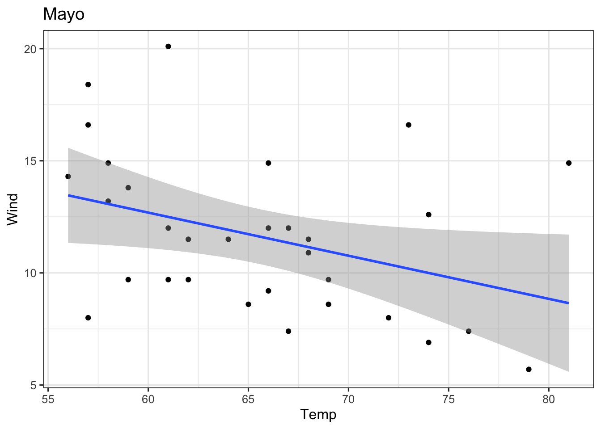
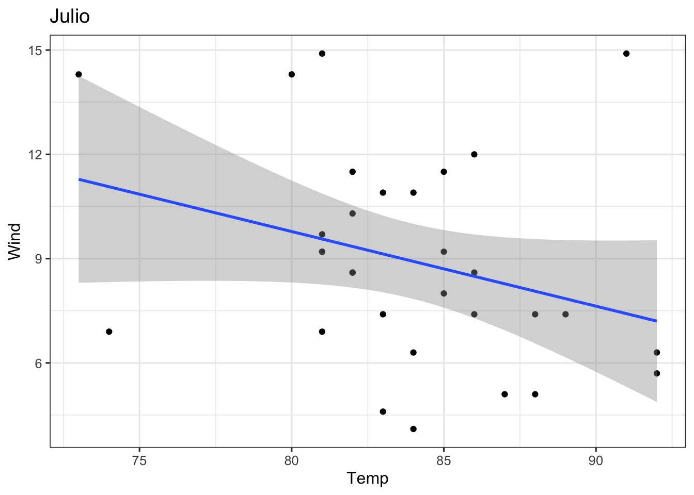
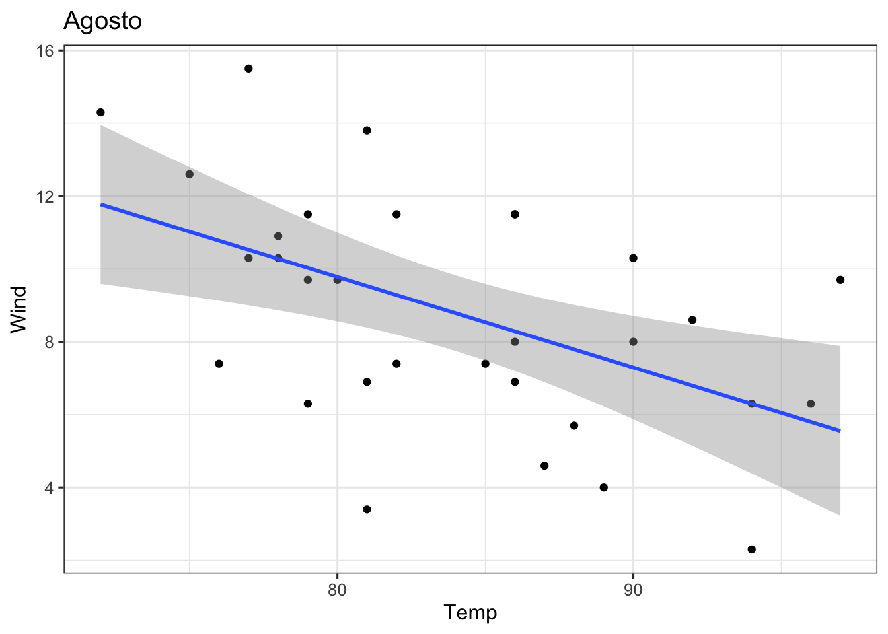
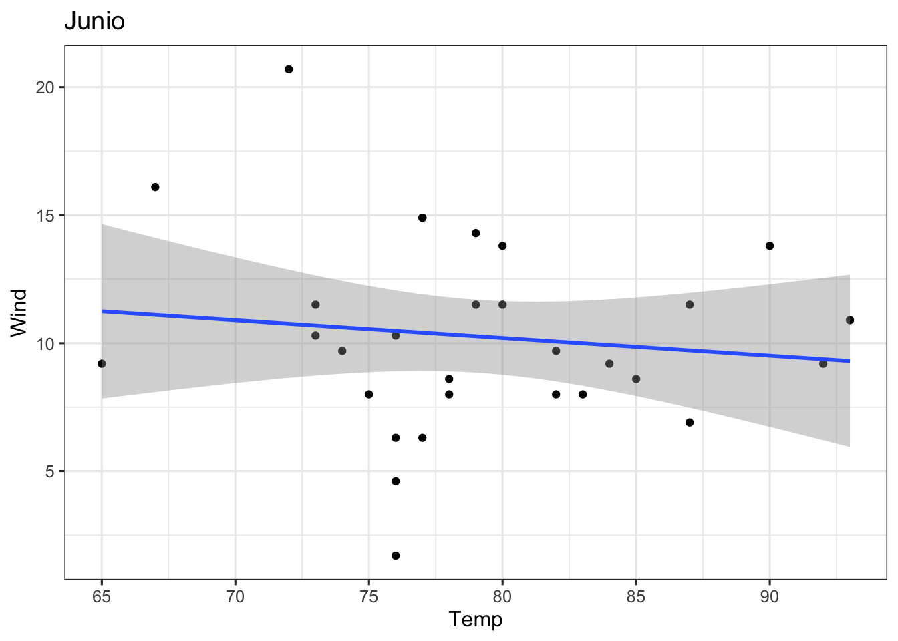
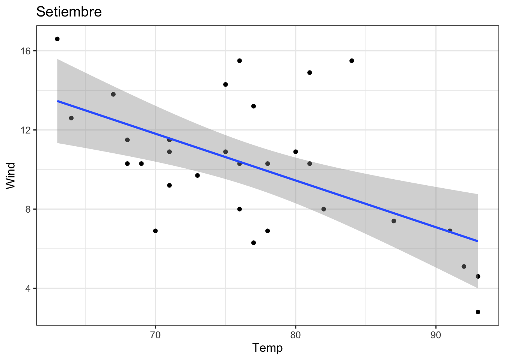
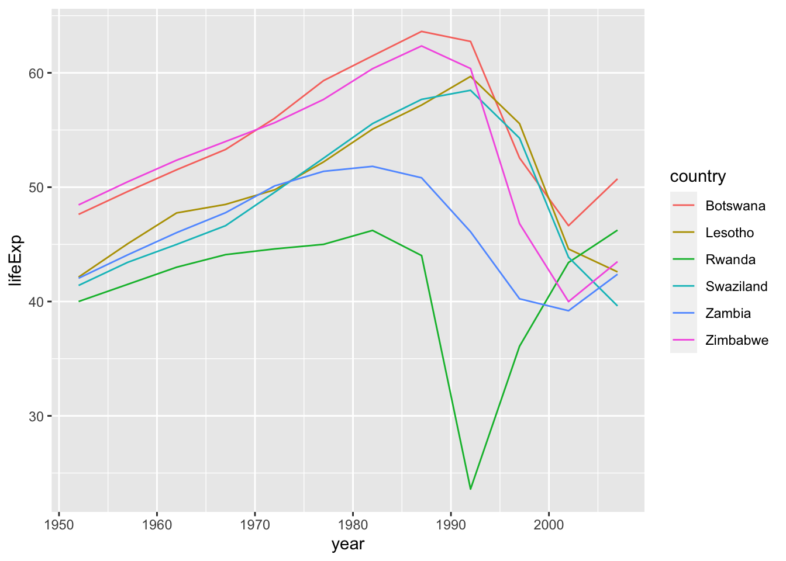

Capitulo 5 Iteracion con purrr
library(babynames)
library(nycflights13)
library(gapminder)
library(dygraphs)
library(highcharter)
library(plotly)
library(fs)
library(rio)
library(tidymodels)
library(tidyverse)data("airquality")
dat1 <- import("data/LungCapData2.csv", setclass = 'tibble')
titanic <- import("data/titanic.csv", setclass = 'tibble')
airq = airquality %>%
mutate(Month = factor(Month,
levels = 5:9,
labels = c("Mayo", "Junio", "Julio",
"Agosto", "Setiembre")),
Sensation = case_when(Temp < 60 ~ 'Cold',
Temp < 70 ~ 'Cool',
Temp < 85 ~ 'Warm',
T ~ 'Hot') %>%
as.factor())La funcion basica de purrr es map(.x, .f, ...), donde .x es el objeto sobre el cual iterar (vector, DataFrame o lista), .f es la funcion o tarea a realizar durante la iteracion, y ... son argumentos extra dependiendo de la funcion. Esta funcion siempre va a resultar en una lista; las variaciones de esta son especificas para cuando se conoce cual va a ser el tipo de dato de salida. map_dbl se usa cuando el resultado de la funcion es un numero con decimales.
set.seed(9416)
exams <- list(
student1 = round(runif(10, 50, 100)),
student2 = round(runif(10, 50, 100)),
student3 = round(runif(10, 50, 100)),
student4 = round(runif(10, 50, 100)),
student5 = round(runif(10, 50, 100))
)
extra_credit <- list(0, 0, 10, 10, 15)5.1 Operaciones basicas
Se muestra la funcionabilidad de varias de las funciones map_*.
map(exams, mean) # media## $student1
## [1] 75.9
##
## $student2
## [1] 75.4
##
## $student3
## [1] 77.7
##
## $student4
## [1] 80.2
##
## $student5
## [1] 78.4exams %>% map_dbl(max) # nota maxima## student1 student2 student3 student4 student5
## 91 97 97 97 97airq %>% map_dbl(mean)## Warning in mean.default(.x[[i]], ...): argument is not numeric or logical:
## returning NA
## Warning in mean.default(.x[[i]], ...): argument is not numeric or logical:
## returning NA## Ozone Solar.R Wind Temp Month Day Sensation
## NA NA 9.957516 77.882353 NA 15.803922 NAairq %>% map_dbl(mean, na.rm = T)## Warning in mean.default(.x[[i]], ...): argument is not numeric or logical:
## returning NA
## Warning in mean.default(.x[[i]], ...): argument is not numeric or logical:
## returning NA## Ozone Solar.R Wind Temp Month Day Sensation
## 42.129310 185.931507 9.957516 77.882353 NA 15.803922 NAairq %>%
select_if(is.numeric) %>%
map_dbl(~ mean(.x, na.rm = T))## Ozone Solar.R Wind Temp Day
## 42.129310 185.931507 9.957516 77.882353 15.803922exams %>%
map2_dbl(extra_credit, ~ mean(.x) + .y)## student1 student2 student3 student4 student5
## 75.9 75.4 87.7 90.2 93.45.2 Leyendo archivos y combinandolos
Ejemplo de como leer varios archivos de texto que tienen el mismo formato y como combinarlos en un solo tibble para posterior manipulacion.
archivos <- dir_ls(path = 'data', glob = "*datos_*")
archivos## data/datos_cuarto_grado.csv data/datos_quinto_grado.csv
## data/datos_tercer_grado.csvfile_info(archivos)map(archivos, import) %>%
bind_rows()archivos %>%
map_dfr(import, .id = "archivo")archivos %>%
map_dfr(import, .id = "archivo") %>%
separate(archivo, into = letters[1:3], sep = '_')archivos %>%
map_dfr(import, .id = "archivo") %>%
separate(archivo, into = c(NA, 'grado', NA), sep = '_')archivos %>%
map_dfr(import, .id = "archivo") %>%
separate(archivo, into = c(NA, 'grado', NA), sep = '_') %>%
separate(nombre, into = c('apellido', 'nombre'), sep = ',')5.3 Datos anidados, caso 1
airq_nest = airq %>%
group_by(Month) %>%
nest()
airq_nest = airq_nest %>%
mutate(mod = map(data, ~lm(Wind ~ Temp, data = .x))) %>%
mutate(slope = map_dbl(mod, ~tidy(.) %>%
filter(term == 'Temp') %>%
pull(estimate)),
r2 = map_dbl(mod, ~glance(.) %>% pull(r.squared)),
plot = map2(data,Month, ~ggplot(.x, aes(Temp, Wind)) +
geom_point() +
geom_smooth(method = 'lm') +
labs(title = .y) +
theme_bw(base_size = 12)))
airq_nestwalk(airq_nest$plot, ~print(.))## `geom_smooth()` using formula 'y ~ x'
## `geom_smooth()` using formula 'y ~ x'
## `geom_smooth()` using formula 'y ~ x'
## `geom_smooth()` using formula 'y ~ x'
## `geom_smooth()` using formula 'y ~ x'
airq_nest %>% pull(plot)## [[1]]## `geom_smooth()` using formula 'y ~ x'
##
## [[2]]## `geom_smooth()` using formula 'y ~ x'
##
## [[3]]## `geom_smooth()` using formula 'y ~ x'
##
## [[4]]## `geom_smooth()` using formula 'y ~ x'
##
## [[5]]## `geom_smooth()` using formula 'y ~ x'
walk2(airq_nest$plot,
airq_nest$Month,
~ggsave(filename = str_glue("figs/regresion_{.y}.png"),
plot = .x, dpi = 300,
width = 7, height = 4, units = "in",
type = "cairo"))## `geom_smooth()` using formula 'y ~ x'
## `geom_smooth()` using formula 'y ~ x'
## `geom_smooth()` using formula 'y ~ x'
## `geom_smooth()` using formula 'y ~ x'
## `geom_smooth()` using formula 'y ~ x'5.4 Datos anidados, caso 2
gap_nest = gapminder %>%
group_by(country) %>%
nest()
gap_nest = gap_nest %>%
mutate(mod = map(data, ~lm(lifeExp ~ year, data = .x))) %>%
mutate(r2 = map_dbl(mod, ~glance(.) %>% pull(r.squared)))
gap_nestgap_nest %>%
# ungroup() %>%
# arrange(r2) %>%
# slice(1:10) %>%
filter(r2 < .25) %>%
unnest(data) %>%
ggplot() +
geom_line(aes(year, lifeExp, col = country, group = country))